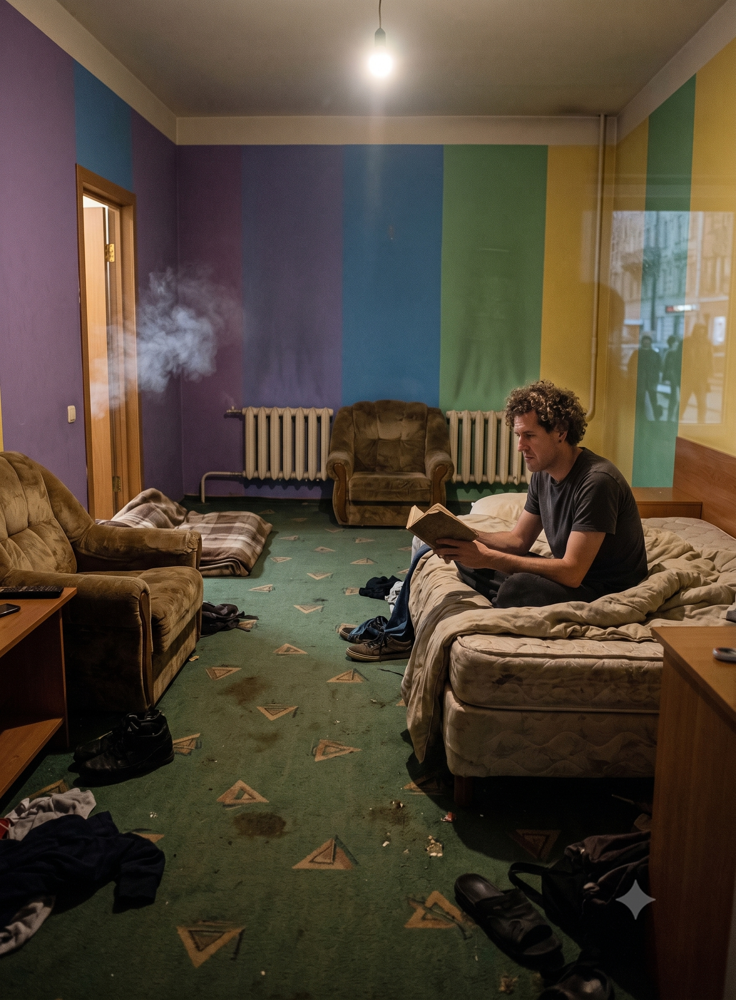

Bon Iver, 20 Years Later
I am on a bed. It is a terrible bed, let’s be honest. I am in what you would call a big room for someone of modest means. Underfoot, the carpet is a faded green, patterned with triangles and stained by a history that dates back twenty, maybe thirty years. The lightbulbs are mostly missing; the one in the bathroom is conveniently broken, leaving a lone, surviving bulb to cast its light from afar.
My things are strewn across the floor. I have stuffed a couch blanket into the gap beneath the front door, which lets in entirely too much ambient noise, light, and, above all, cigarette smoke from the hallway. I am stationed right next to the reception area, and the smoke pours in relentlessly as the owner drinks, smokes, and makes noise with his friends. A couple of velour-covered armchairs sit in the corner, looking as though they arrived straight from the Soviet Union with love. There are two radiators: a new one that doesn’t work, and an old one that doesn’t work either. The rest of the furniture is constructed from composite wood—some of it stained, some of it fragile, and all of it thoroughly depressing.

As I sit here reading through my old stories, I can’t stop thinking about grim days in Nanjing, marked by endless, heavy downpours of rain. Or perhaps it was Perth? The circumstances were much the same: missing my friends, reeling from consecutive breakups with two wonderful women, and having stubbornly told everyone I went to school with that I wanted absolutely nothing to do with them. I remember sleeping on a couch in someone else's living room, watching non-stop reruns of my favorite show just to try and force a bit of cheer into myself.
She would have known I was going deep. She would have known I was already deep to begin with.
And now, here I am. I sit in a room that smells of tobacco smoke and old, degrading plastic. Looking at the clash of purple, blue, green, and yellow paint on the walls, I feel a profound wave of sadness. Sadness for what was. Sadness for what never came to be. Sadness for what is today.
Today is simply me: resting in a cold room with no heat, smelling of stale smoke, isolated in a strange city full of people who don’t smile, quietly wondering what comes next.